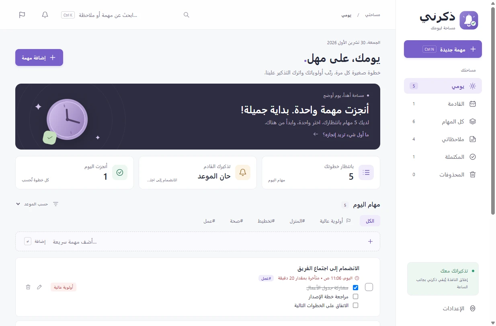
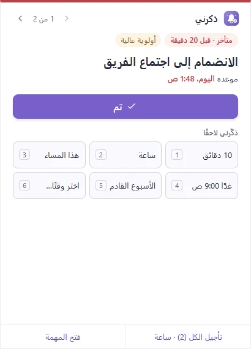
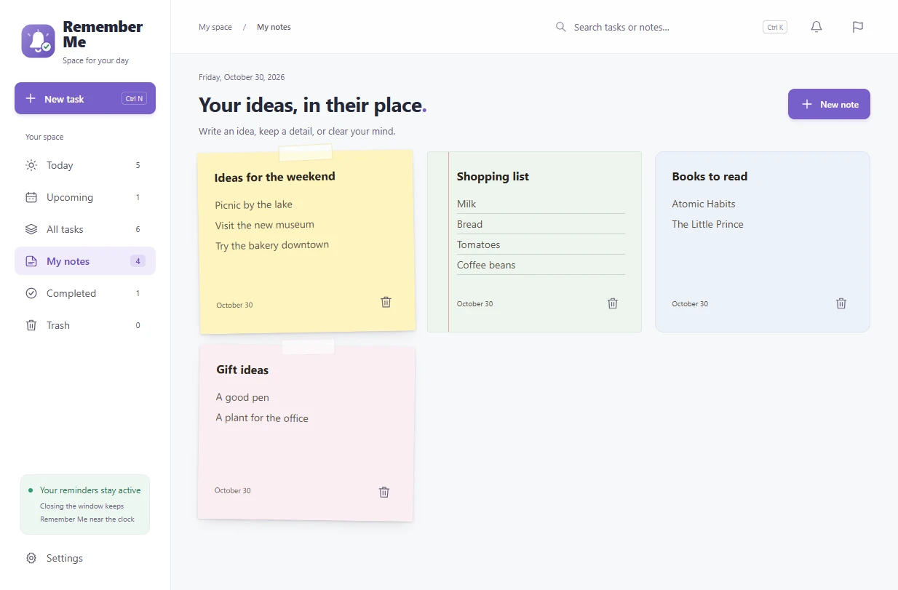
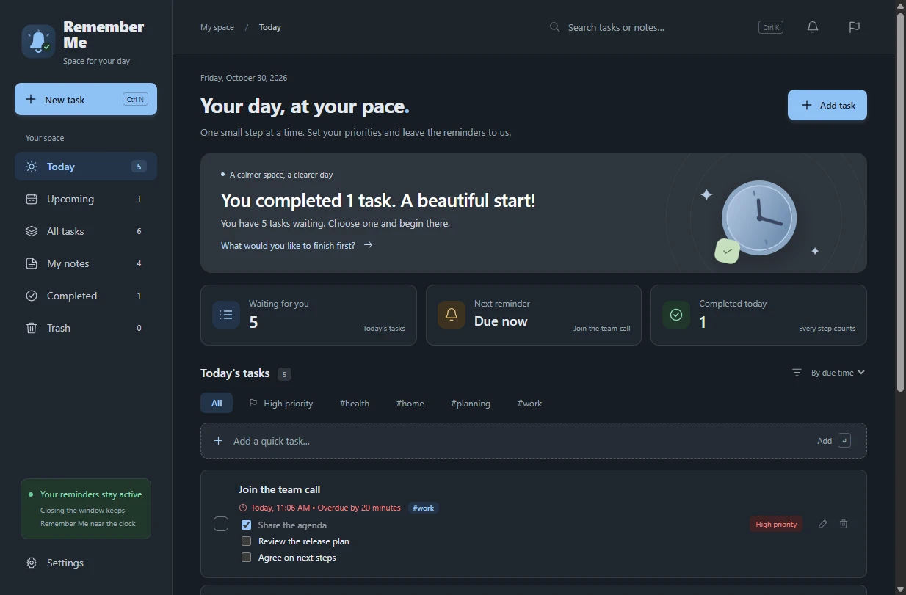

تذكيرات لا تختفي
نافذة ثابتة فوق شريط المهام تبيّن كم تأخرت المهمة وأولويتها وتكرارها. وإذا حان أكثر من تذكير معًا، تُعرض واحدًا تلو الآخر فلا يضيع أيٌّ منها.
يعرض ذكرني كل تذكير في نافذة خاصة فوق شريط المهام وأمام نوافذك الأخرى، ولا تختفي حتى تختار «تم» أو تؤجّله. لا شيء يضيع في مركز الإشعارات.


المهام والملاحظات والتذكيرات في نافذة واحدة هادئة. يعمل بصمت بجانب الساعة، ويمكن أن يبدأ مع ويندوز.
نافذة ثابتة فوق شريط المهام تبيّن كم تأخرت المهمة وأولويتها وتكرارها. وإذا حان أكثر من تذكير معًا، تُعرض واحدًا تلو الآخر فلا يضيع أيٌّ منها.
10 دقائق، ساعة، هذا المساء، غدًا 9:00، الأسبوع القادم، أو أي وقت تختاره، بالمفاتيح 1–6. اختر خياراتك الستة بنفسك، وشاهد إلى أين يؤجّل كل زر قبل أن تضغطه، و«تأجيل الكل» عندما تنتظرك عدة تذكيرات.
يوميًا، أو في أيام تختارها، أو كل بضعة أيام، أو شهريًا أو سنويًا، في الوقت نفسه حتى مع التوقيت الصيفي. «تخطَّ هذه المرة» أو انقل «هذه المرة فقط».
أضف وسومًا إلى المهام وصفِّ القائمة بها، ورتّبها حسب الموعد أو الأولوية أو العنوان، وقسّم المهمة إلى خطوات تؤشّر عليها من القائمة مباشرة.
ورقة لاصقة أو ورق مسطّر أو بطاقة بسيطة بعشرة ألوان، مع بحث يجد النص العربي مهما اختلف التشكيل أو صور الهمزة والتاء المربوطة والياء.
واجهة عربية كاملة من اليمين إلى اليسار، ومعها الإنجليزية وعشر لغات أخرى. التواريخ والأرقام تتبع لغتك، دائمًا بالأرقام 0-9.
فاتح أو داكن أو مثل ويندوز، وست لوحات ألوان منها التباين العالي، مع استخدام كامل بلوحة المفاتيح ودعم قارئات الشاشة.
نسخ كاملة ببصمات تحقق، تُفحص قبل استعادتها. ويمكن نسخها يوميًا إلى مجلد Google Drive إن أردت نسخة خارج جهازك.
أرفق ملفات PDF وجداول ومستندات وصورًا بالمهام والملاحظات. أما البرامج والسكربتات فتُعرض في مستكشف الملفات بدل تشغيلها.
إشعار ويندوز يظهر لثوانٍ ثم يختفي. فإن كنت بعيدًا أو مشغولًا، بقي في مركز الإشعارات حتى تتذكّر أن تنظر إليه.


يعمل ذكرني دون إنترنت، وليس فيه حساب ولا تحليلات ولا تتبّع. لا يوجد خادم يمكنه رؤية مهامك.
المهام والملاحظات والمرفقات والإعدادات في %APPDATA%\Remember Me، تُحفظ بأمان مع نسخة احتياطية واستعادة تلقائية عند التلف.
لا يتصل التطبيق بالإنترنت إلا ليبحث عن تحديثات على GitHub، إن سمحت بذلك، ولا يُرسل شيء من بياناتك. والنسخ الاحتياطية تذهب فقط إلى المجلدات التي تختارها.
الشيفرة كاملة على GitHub بترخيص MIT، وكل مُثبِّت يُبنى هناك من تلك الشيفرة، مع بصمة تحقق وإثبات للبناء.
Remember-Me-Setup-1.6.0-x64.exe من أحدث إصدار.التثبيت عبر winget قريبًاwinget install Sarmad.RememberMe
المُثبِّت غير موقَّع رقميًا بعد، وSmartScreen في ويندوز يحذّر من البرامج الجديدة غير الموقَّعة التي نزّلها عدد قليل من الناس. هذا لا يعني أنه وجد شيئًا في الملف. ويمكنك التأكد أن ما نزّلته هو بالضبط ما بناه GitHub من الشيفرة العامة:
1. قارن بصمة SHA-256 مع الملف SHA256SUMS.txt من الإصدار نفسه:
Get-FileHash .\Remember-Me-Setup-1.6.0-x64.exe -Algorithm SHA2562. أو تحقّق من إثبات البناء بأداة GitHub CLI:
gh attestation verify .\Remember-Me-Setup-1.6.0-x64.exe --repo sarmadiq9090-coder/Remember-Meاطّلع على سياسة التوقيع الرقمي (بالإنجليزية).
Microsoft To Do وTickTick وTodoist خيارات ممتازة إن أردت مهامك على كل أجهزتك أو مشاركة القوائم مع غيرك. أما ذكرني فلمن يريد تذكيرات لا تفوته على حاسوبه بنظام ويندوز، دون حساب ولا سحابة.
| الميزة | ذكرني | Microsoft To Do | TickTick | Todoist |
|---|---|---|---|---|
| السعر | مجاني، بلا خطة مدفوعة | مجاني | مجاني، مع خطة Premium مدفوعة | مجاني، مع خطط مدفوعة |
| الحساب | غير مطلوب | حساب Microsoft | حساب TickTick | حساب Todoist |
| أين تُحفظ مهامك | على جهازك فقط | سحابة Microsoft | سحابة TickTick | سحابة Todoist |
| مفتوح المصدر | نعم، بترخيص MIT | لا | لا | لا |
| تطبيقات للهاتف وماك والويب | لا، ويندوز فقط | نعم | نعم | نعم |
| المزامنة بين الأجهزة | لا (نسخ احتياطية إلى مجلد Drive) | نعم | نعم | نعم |
| قوائم مشتركة | لا | نعم | نعم | نعم |
بحسب المواقع الرسمية لكل منتج في أكتوبر 2026، لتطبيقاتها على ويندوز. الخطط والميزات تتغيّر، فراجع مواقعها للتفاصيل.
نعم. ذكرني مفتوح المصدر بترخيص MIT، بلا إعلانات ولا خطة مدفوعة ولا حساب.
لا، كل شيء يعمل دون اتصال. وإن سمحت بالتحديث التلقائي، يبحث عن إصدارات جديدة على GitHub مرة في اليوم تقريبًا.
هو تطبيق لويندوز ولا يُزامن بين الأجهزة. يمكنك تصدير نسخة احتياطية، أو نسخ النسخ الاحتياطية إلى مجلد Google Drive، ثم استعادتها على جهاز آخر.
إغلاق النافذة يُبقي ذكرني يعمل بجانب الساعة، فتظهر التذكيرات كالمعتاد. فعّل «التشغيل مع ويندوز» ليعمل بعد إعادة التشغيل. والتذكيرات التي فاتتك والجهاز مطفأ أو في وضع السكون تظهر فور عودتك.
يسألك التطبيق مرة واحدة إن كان يُسمح له بتحديث نفسه. إن وافقت، ينزّل الإصدارات الجديدة من GitHub في الخلفية، ويحفظ نسخة أمان من بياناتك، ويثبّتها عند إعادة تشغيله. لا شيء يُعاد تشغيله دون قرارك.
ويندوز 10 و11 بنظام 64 بت.
من «الإعدادات ← التطبيقات» في ويندوز. يبقى مجلد بياناتك كما هو، تحسّبًا لرغبتك في استعادته.
بكل سرور. عشر من اللغات مترجمة بمساعدة الآلة، وتصحيحات المتحدثين الأصليين مرحّب بها جدًا. اطّلع على طريقة تصحيح ترجمة أو افتح بلاغًا.